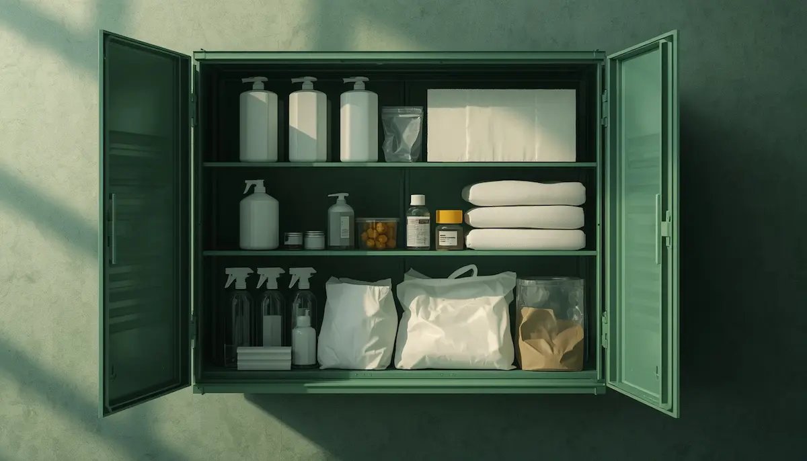
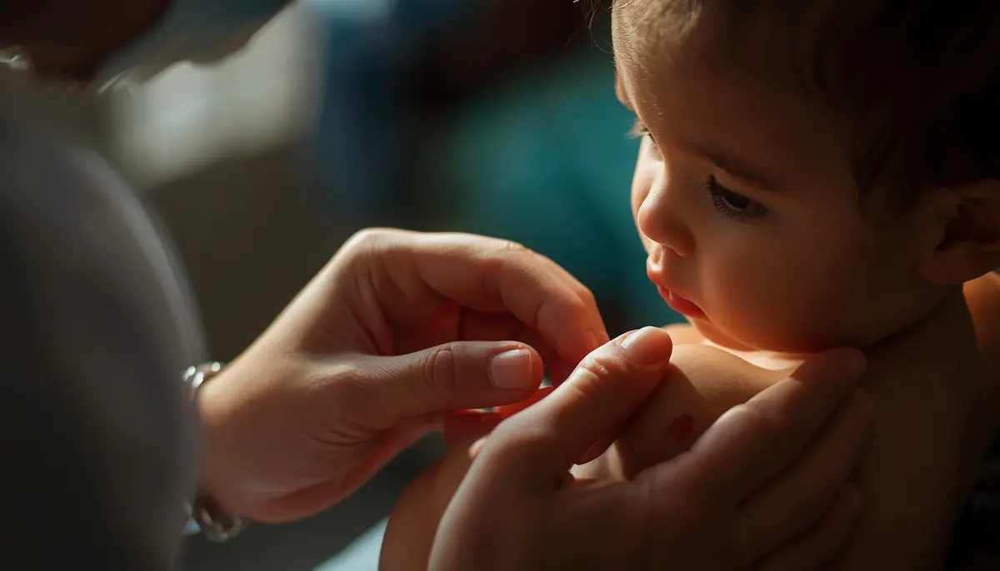

Prevención y primeros auxilios infantiles
La seguridad y el bienestar de los niños dependen en gran medida de una adecuada anticipación a los riesgos cotidianos, tanto en el hogar como en el entorno escolar. Contar con pautas claras de prevención y saber cómo reaccionar de forma serena ante un accidente menor marca la diferencia entre la alarma y una gestión eficaz. He reunido aquí los pilares fundamentales para anticiparse a los peligros y actuar con seguridad. Pincha en cada tarjeta para profundizar en cada tema.

Anticiparse a los riesgos en el hogar y el colegio
Descubre cómo identificar puntos críticos y aplicar medidas preventivas sencillas para proteger a los menores de caídas, golpes y accidentes comunes.

El botiquín esencial: qué debe contener y cómo organizarlo
Aprende a preparar y mantener al día un botiquín adaptado para la infancia, con los elementos indispensables para curas rápidas y seguras.

Tratamiento seguro de pequeñas heridas y raspones
Pautas paso a paso para la limpieza, desinfección y protección de cortes superficiales, evitando infecciones y calmando al menor.

Gestión de golpes, chichones y pequeñas contusiones
Cómo aplicar frío local correctamente, qué señales de alarma vigilar tras un golpe en la cabeza y cuándo acudir al centro médico.

Prevención y pautas iniciales ante el atragantamiento
Identifica alimentos y objetos de riesgo, aprende a diferenciar una obstrucción parcial de una total y conoce los pasos clave de actuación.
Cómo actuar ante quemaduras leves y solares
Medidas inmediatas de enfriamiento con agua templada/fría, qué productos evitar aplicar sobre la piel y cuándo buscar asistencia.

Manejo de la fiebre y pautas de confort en la infancia
Comprende el papel de la fiebre como mecanismo de defensa, cómo vigilar al menor y qué pautas seguir para garantizar su bienestar.
Cuándo y cómo activar los servicios de emergencia
Información clara sobre qué datos aportar al llamar al 112, cómo mantener la calma y preparar al entorno para una respuesta rápida.
🛡️ Continúa profundizando en la seguridad y el autocuidado
Para acompañar la tranquilidad en el hogar y la gestión familiar de forma completa, te sugerimos explorar estos recursos:
- 🎙️ Escucha el podcast: Sanar el agotamiento y la culpa parental (Ep. 09)
- 📥 Descarga el recurso práctico: Guía de Autocuidado para Familias (PDF)